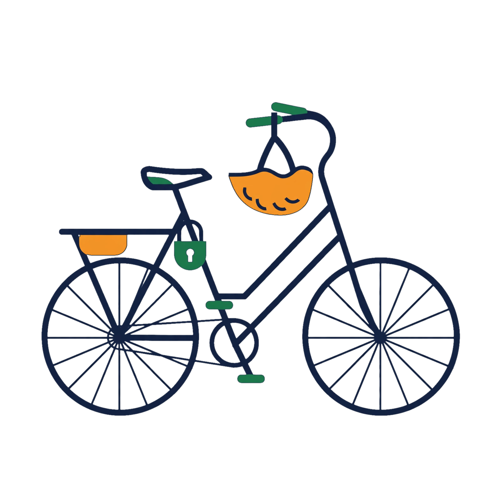
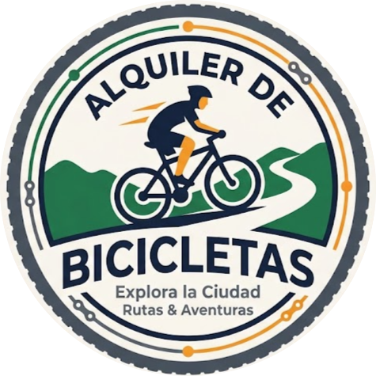
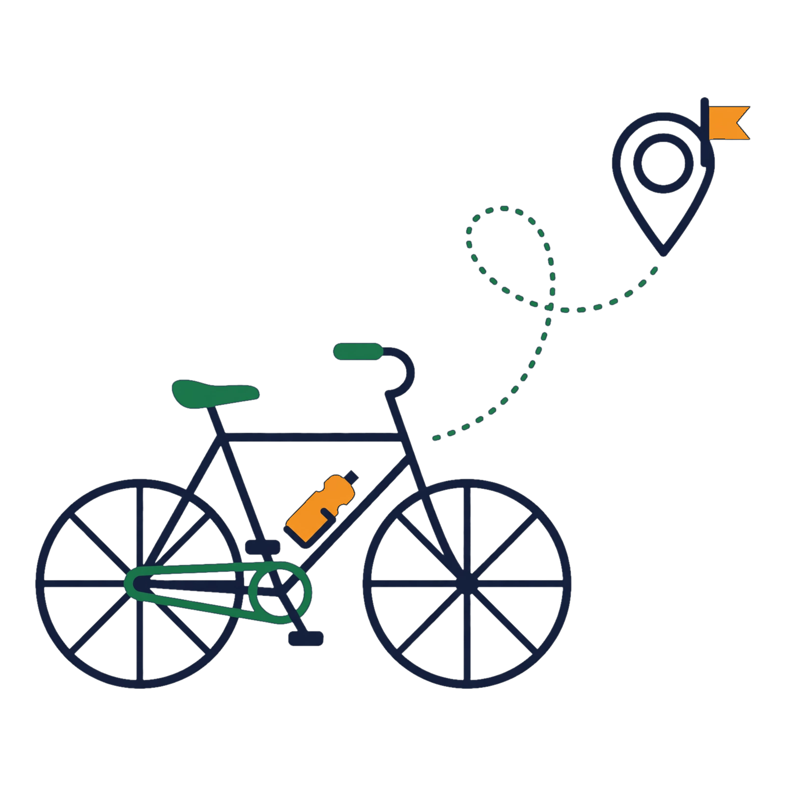
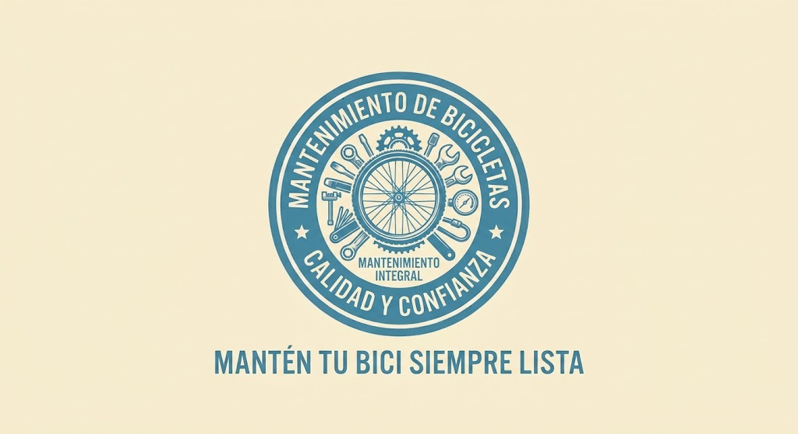
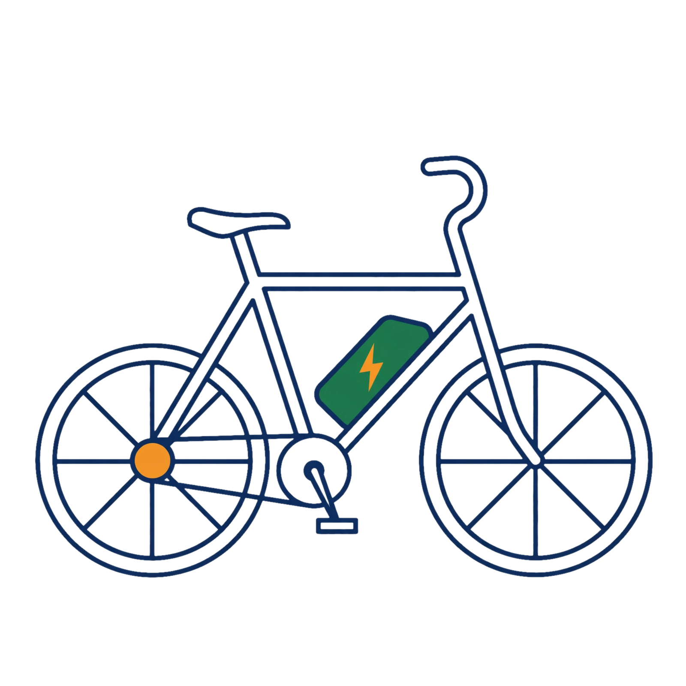

Alquiler de bicicletas
Encuentra una forma cómoda de recorrer Medellín. Alquila una bicicleta para tus desplazamientos o paseos por la ciudad. Tu alquiler incluye casco y candado para que disfrutes del recorrido con mayor tranquilidad.


Rueda LibreDescubre Medellín sobre dos ruedas. Alquila tu bicicleta con nosotros y disfruta de una forma práctica, saludable y divertida de recorrer la ciudad. Conoce nuestra ubicación en la sección Encuéntranos.

Somos Rueda Libre, una empresa de Medellín que promueve la movilidad sostenible y las experiencias sobre dos ruedas. Queremos que descubras la ciudad a tu propio ritmo, con bicicletas y servicios pensados para hacer cada recorrido más cómodo y seguro.
Encuentra una forma cómoda de recorrer Medellín. Alquila una bicicleta para tus desplazamientos o paseos por la ciudad. Tu alquiler incluye casco y candado para que disfrutes del recorrido con mayor tranquilidad.

Explora Medellín acompañado de nuestros recorridos guiados. Descubre lugares emblemáticos, conoce rincones diferentes y disfruta de la ciudad mientras pedaleas.

Cuida tu bicicleta y manténla en buenas condiciones. Te ofrecemos mantenimiento para ayudarte a disfrutar de recorridos más seguros y prolongar la vida útil de tu bicicleta.

Recorre Medellín con asistencia eléctrica. Una alternativa cómoda para disfrutar la ciudad y sus recorridos con menos esfuerzo.


Visítanos en la Cra. 74 #48-010, sector Estadio, Medellín. ¡Estaremos encantados de ayudarte a preparar tu próximo recorrido!